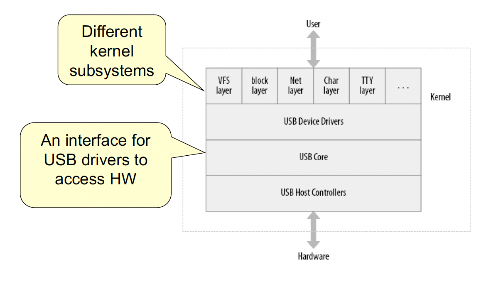

final review
USB device basics
Universal Serial Bus (USB) connects between a computer and peripheral devices
- created to replace various slow buses (parallel, serial, and keyboard connections)
A USB device can never start sending data without first being asked by the host controller.
Single-master implementation
- Host polls various devices
- A device can request a fixed bandwidth (for audio and video I/O)
Universal Serial Bus is a misnomer…
- Actually a tree built out of point-to-point links
- Links are four-wire cables (ground, power, and two signal wires)
The protocol
USB protocol defines a set of standards that any device can follow.
- no need to write a driver for a device that is in a predefined class and follows that standard
- predefined classes: storage devices, keyboards, mice, joysticks, network devices, and modems
- no defined standard for video devices and USB-to-serial devices
- A driver is needed for every device
Driver types
Linux supports two types of USB drivers
- Drivers on a host system
- control the USB devices that are plugged into it
- Drivers on a device (USB gadget drivers)
- control how that single device looks to the host computer as a USB device
- some hardware devices can actually be both
- called USB OTG (On The Go)
- e.g., Android 3.0+, some printers


Overview
A USB device has one or more configurations
A configuration has one or more interfaces
An interface has one or more settings
- different quality of services
- Also zero or more endpoints
Endpoints
The most basic form of USB communications is through an endpoint.
- Unidirectional - carries data in one direction
- from the host to device (OUT endpoint)
- from the device to the host (IN endpoint)
Four endpoint types
- CONTROL
- INTERRUPT
- BULK
- ISOCHRONOUS
CONTROL and BULK endpoints are used for asynchronous data transfers
INTERRUPT and ISOCHRONOUS endpoints are periodic with reserved bandwidth
Endpoint information is in struct usb_endpoint_descriptor
- embedded in
struct usb_host_endpoint - Note: defined by the USB standard, so not Linux looking
Some important fields
bEndpointAddress(8-bit)- Use
USB_DIR_OUTandUSB_DIR_INbit masks to determine the direction of data flow.
- Use
bmAttributes
- type of the endpoint
& USB_ENDPOINT_XFERTYPE_MASKto determine if the endpoint is of typeUSB_ENDPOINT_XFER_ISOC,USB_ENDPOINT_XFER_BULK, orUSB_ENDPOINT_XFER_INT
wMaxPacketSize
- Maximum bytes that an endpoint can handle
- Larger transfers will be split into multiple transfers
bInterval
- For INTERRUPT endpoints, this value specifies the milliseconds between interrupt requests for the endpoint
CONTROL
Used for configuring the device, retrieving information and status about the device, or sending commands to the device
Every device has a control endpoint called endpoint 0
- used by USB core to configure the device at insertion time
- Transfers are guaranteed with reserved bandwidth.
INTERRUPT
transfer small amounts of data at a fixed rate
for USB keyboards and mice
also used to control the device
not for large transfers
guaranteed reserved bandwidth
BULK
transfer large amounts of data
no data loss
not time guaranteed
A BULK packet might be split up across multiple transfers.
Used for printers, storage, and network devices
ISOCHORONOUS
transfer large amount of data
for real-time data collections, A/V devices
unlike bulk endpoints, no guarantees (potential data loss)
Interfaces
USB endpoints are bundled into interfaces
- A interface handles only one type of logical connection (e.g., a mouse)
- Some devices have multiple interfaces
- e.g., a speaker
- one interface for buttons and one for audio stream
- e.g., a speaker
USB interface may have alternate settings
- e.g., different settings to reserve different amounts of bandwidth for the device


Configurations
USB interfaces are bundled into configurations
A USB device can have multiple configurations
- only one can be active at a time
- can switch between them


How to make NN fast?
Optimize network
- use of better filter set
- topology pruning: edges, nodes, depths…
Use of better machine
- GPU, TPU, VLIW, etc…
Operations in CNN
Terms

N - number of input fmaps/output fmaps (batch size)
C - number of 2-D input fmaps/filters (channels)
H - height of input fmap (activations)
W - width of input fmap (activations)
R - height of 2-D filter (weights)
S - width of 2-D filter (weights)
M - number of 2-D output fmaps (channels)
E - height of output fmap (activations)
F - width of output fmap (activations)
Activation function
- Input - input FMAP, filter weight
- output - output FMAP

Simple implementation of CONV layer with 7 loop layers

Computational acceleration
Memory access consumes order of magnitude higher resources compared to the computation
But, anyhow, 90% of computation is occupied by convolution
- convolution is the sequence of Dot-product (vector matrix multiplication)
- How to accelerate the dot-product?
Performance Metrics
CPI (cycle per instruction)
clock cycles per instructions, clocks per instruction
average number of clock cycles per instruction for a program or program fragment
MIPS (million instructions per second)
Discussion
How can CPI value be smaller than 1.00?
- effect of pipeline
Why does ‘branch (BL)’ instruction has 1.00 CPI value?
- result of a stall pipeline


Dot-product engine
Multiply accumulate (MAC) unit
- accept multiple inputs and calculate at once
dot-product occupy 90% of processor time
Solid and flexible
How to accelerate the system?
- scaling and clock boost
- parallelization and concurrency
How to make the system flexible?
- put a reconfigurable stage or part in the systems
- design level and granularity


SoC (system on a chip)
Started with the idea of integrating all components in a board into a single chip
from microcontrollers and discrete components to fully integrated system-on-chip (SoC)
To increase the productivity for future designs, the approach of reusable components was adopted = intellectual property cores (IPs)
Why SoC?
System architects cannot afford design restarts.
HW and SW design teams cannot afford n design iterations or to learn all the details about every potential IP core.
System managers cannot afford to reinvest in completely new tools.
IC business managers cannot afford missing customer market windows or foundry schedules.
Industry shifts from ASICs to systems-on-a-chip.
SoC in real life

General SoC architecture

Heterogeneous processors
- those used to run the end application and
- those dedicated to execute specific functions that could have been designed in hardware
Application-specific intellectual property (IP) cores
communication interconnect
IP-based design of implementation

Intellectual property (IP)
Hard cores
Hard core are provided as black boxes, usually in layout form in a given technology and with an encrypted simulation model.
firm cores
Firm cores are provided as a synthesized netlist in a hardware-description language (HDL), that is, after logic synthesis and technology mapping, but without layout information. These cores can be simulated and changed if necessary.
soft cores
Soft cores are given as register-transfer level HDLs, and the user is responsible for its synthesis and layout. Usually along with the soft cores, the IP providers also supply synthesis and layout scripts and timing assertions.
HW and SW co-design
Hardware/software partitioning
- Different architectures (such as processor cores: ARM, DSP) are selected for possible implementation, to explore various HW/SW partitioning tradeoffs.
interface design
- elect the corresponding communication mechanisms (memory mapped I/P, fast interrupt request etc.,) for a given target core
co-simulation and co-implementation
SoC and platform

platform as a meeting point
Redundant or partially reconfigurable ASIC with core and SW
reuse system design—hardware, software
- any given space has a limited number of good solutions to its basic problems
- A platform captures the good solutions to the important design challenges in that space.
Embedded hardware
Embedded system?
- A computer system with a dedicated function within a larger mechanical or electrical system
Common features
- designed to do some specific task, rather than be a general-purpose computer for multiple tasks
- Usually have real-time performance constraints that must be met, for reasons such as safety and usability; others may have low or no performance requirements, allowing the system hardware to be simplified to reduce cost
- Not always standalone devices. Many embedded systems consist of small, computerized parts within a larger device that serves a more general purpose.
- Computing environment with limited computer hardware resources: little memory, small or non-existent keyboard or screen
Design of embedded systems: reliability and efficiency
- general purpose PCs: performance and flexibility
- HW
- long-time and fault-tolerant operation for specific purposes
- considering physical reliability
- use of specialized microprocessor with low cost and high efficiency
- low power and thermal reliability for long time usage
- SW
- perform repeatedly specific function with limited computer hardware resources: little memory, small or non-existent keyboard or screen
Microprocessor
- embedded processors
Memory
- DRAM, SRAM, flash, and so on
External devices
- Serial IO, Network IO, Display, Camera, GPS, Motor, and so on
Trend of embedded software
- Embedded OS + middleware → embedded software platform
- Emerging of embedded DBMS
- Development environment and tool for design automation and integration
Features
- specialized for specific purpose
- real-time property - real time OS with real-time scheduler
- reliability - fault tolerance techies (voting systems, backup systems…)
- physical design - size, temperature, power, and so on
- distributed and virtualized software environments
- cross development environment for various host and target systems
Types of embedded software
- firmware
- hared coded control loop without operating systems (superloop)
- limited user interface and flexibility
- reliable for simple and critical usage
- real-time operating systems
- task scheduling with real-time constraints
- PC-like user interface
- flexible, but less reliable
Systematic design flow
Design flows operate at multiple levels of abstraction
need a uniform description to translate between levels
increasing costs of design and fabrication necessitate greater reliance on automation via CAD tools
$5M - $100M to design new chips
increasing time to market pressure

System synthesis
hardware description language
automation of design refinement steps
feedback for accurate simulation
example targets: ASICs, FPGAs

Gajski-Kuhn Y-chart

Design is structured around a hierarchy of representations
HDLs can describe distinct aspects of a design at multiple levels of abstraction
Platform-based design
motivations
- technology push
- high-volume products
- feasible design
- marketing push
- fast turnaround
- differentiated products

What is a platform?

A partial design
- for a particular type of system
- includes embedded processor(s)
- may include embedded software
- customizable to a customer’s requirements
- software
- component changes
Design space and platform


Platform vs. full-custom
Platform has many fewer degrees of freedom
- harder to differentiate
- can analyze design characteristics
full-custom
- extremely long design cycles
- may use less aggressive design styles if you can’t reuse some pieces
Why platforms?
Reuse system design—hardware, software
- Any given space has a limited number of good solutions to its basic problems
- A platform captures the good solutions to the important design challenges in that space
A platform reuses architectures
- fast time-to-market
allows chip to be customized to add value
PC flourished via. platform
The x86 instruction set architecture (ISA) that makes it possible to re-use the operating system and the software application at the binary level 3.
A fully specified set of busses (ISA, USB, PCI) that make it possible to use the same expansion board or IC’s for different products 4.
Legacy support for the ISA interrupt controller that handles the basic interaction between software and hardware.
A full specification of a set of I/O devices, such as keyboard, mouse, audio and video devices.
Computing platform
Computing platform means in general sense, where any piece of software is executed. It may be the hardware or OS, even a web browser as long as the code is executed in it.
The term computing platform can refer to different abstraction levels, including a certain hardware architecture, an operating system (OS), and runtime libraries. In total it can be said to be the stage on which computer programs can run.


Y-chart approach

Abstraction pyramid

Stepwise exploration of the design space

Design space exploration

Summary of the Y-chart approach
It permits designer to quantify design choices in the architecture, the algorithms, and the mapping.
It permits the systematic exploration of the design space of a system.
It allows for the consideration of trade-off between various metrics for an system that obeys set-wide design objectives.
It is invariant to a specific design level.
It requires an explicit definition of a platform and the applications. This fosters reuse.